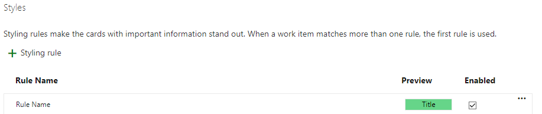

Azure DevOps Boards Cards - Styles Ayarları
"Styles" ayarlarıyla, kartların arka plan rengi, yazı tipi, boyut, kenarlık ve diğer stil özelliklerini değiştirebilirsiniz. Aşağıda, Azure DevOps Boards'daki "Cards - Styles" ayarlarının bazı örneklerini bulabilirsiniz:
- Arka Plan Rengi: Kartların arka plan rengini belirleyebilirsiniz. Örneğin, belirli önceliklere sahip kartlar için farklı renkler kullanabilirsiniz (örneğin, yüksek öncelikli kartlar kırmızı, düşük öncelikli kartlar yeşil).
- Yazı Tipi ve Boyutu: Kartların başlık ve açıklama metinlerinin yazı tipini ve boyutunu özelleştirebilirsiniz. Örneğin, başlıkları daha kalın veya büyük yapabilirsiniz.
- Kenarlık ve Gölge: Kartların etrafında kenarlık veya gölge efektleri ekleyebilirsiniz. Bu, kartların daha belirgin ve görsel olarak ayrılmış görünmesini sağlar.
- Durum Renkleri: Kartların durumunu gösteren renkler kullanabilirsiniz. Örneğin, "Yapılacak" durumunda olan kartlar sarı, "Devam Ediyor" durumunda olan kartlar mavi renkte görünebilir.
- Özel Sınıflar ve Stiller: Kendi CSS sınıflarınızı ve stillerinizi kullanarak kartları daha fazla özelleştirebilirsiniz. Örneğin, belirli bir önceliğe veya kategoriye sahip kartlara özel bir stil uygulayabilirsiniz.
